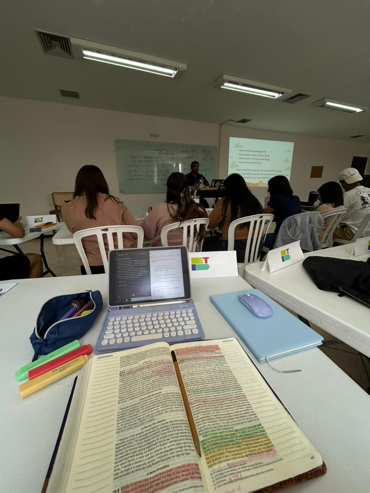
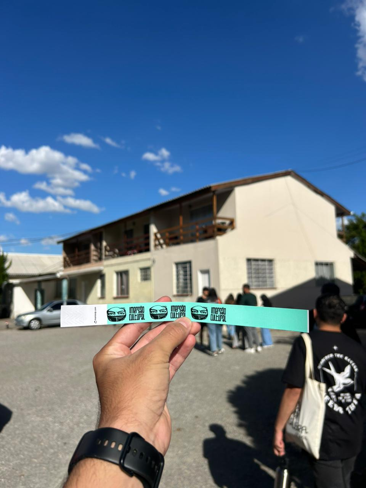
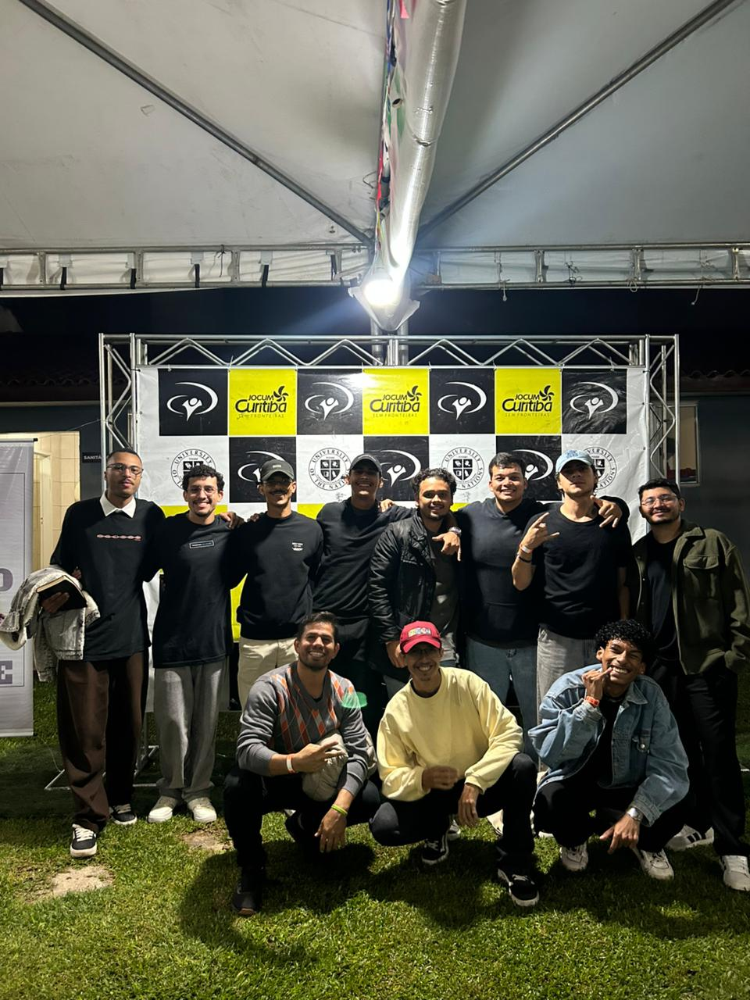
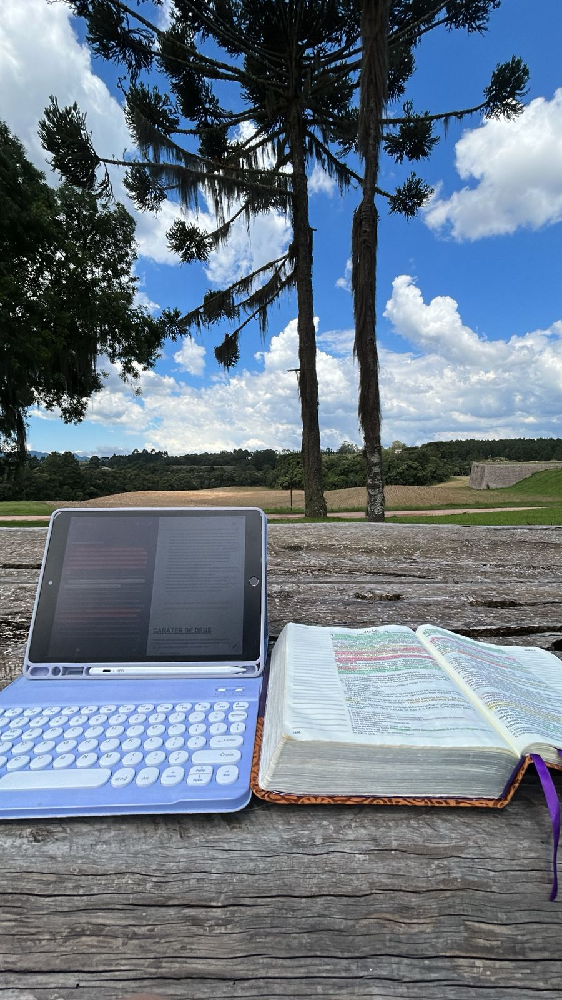

SEMANA 03
ETED
SUMÁRIO
| 1- AULA DA SEMANA | 4- RELACIONAMENTOS |
| 2- CARÁTER DE DEUS | 5- MEDITAÇÃO |
| 3- MISSÕES | 6- AUTOAVALIAÇÃO |
AULA DA SEMANA
HISTÓRIA DE DEUS
BEJAMIM
09/03 - 13/03
Essa semana foram dias muito edificantes, aprender sobre a história de DEUS de forma detalhada e intensa era algo que eu nunca havia dado a devida importância, porém agora após as aulas eu pude ter a convicção do quão necessário é. Todos os capítulos me impactaram demais, e o qual o SENHOR me comunicou algo novo, sem dúvidas foi o primeiro, a respeito da TRINDADE, parar para meditar sobre a Eternidade de DEUS e sobre a SUA grandiosidade, foi algo extremamente novo e importante. Realmente foram muitos assuntos para serem processados, mas ao longo dos dias, estou conseguindo reconhecer o que DEUS está me falando. Um desafio que senti durante esses dias de aula foi referente ao antigo testamento, algumas passagens citadas eu não me recordei e me senti desafiado a retornar com a leitura. DEUS me confortou muito durante as aulas sobre o tempo, onde pude reconhecer que estou no centro da vontade DELE, e consequentemente preciso ter paciência e confiança, pois "Todo aquele que quer caminhar com CRISTO, precisa aprender a esperar", como compartilhou o professor Benjamim.
NÃO HÁ COMO CONHECER A NOSSA IDENTIDADE, O NOSSO PROPÓSITO, O SENTIDO DA VIDA, DESCONHECENDO NOSSA ORIGEM.

CARÁTER DE DEUS
CARÁTER E NATUREZA DE DEUS
DEUS CRIADOR
DEUS me revelou o Seu caráter de DEUS criador, ELE me formou no secreto e moldou o mais íntimo do meu SER. O DEUS que pensou em cada detalhe sobre mim e escreveu todos os dias minha vida desde a eternidade, é o DEUS que gerou todos os animais com seus órgãos e individualidades. Através de um momento de contemplação, DEUS me disse sobre: Da mesma forma que ELE fundou toda a criação (natureza/seres vivos), assim também ELE me formou, e se mantém cuidando de cada detalhe. E assim como ELE é um DEUS criador, eu, como filho, sendo a imagem e semelhança DELE, também tenho a criatividade refletida em minha vida. Isso me fez meditar sobre as vezes que deixei de executar algo por me julgar sem criatividade, com certeza DEUS tratou esse caráter em mim durante essa semana.
CONTEMPLANDO O CRIADOR ATRAVÉS DA CRIAÇÃO.
MISSÕES
O QUE DEUS TEM FEITO NAS NAÇÕES
Nessa semana tivemos a oportunidade de participar da Imersão Cultural no Missio Dei realizado pela Jocum Sem Fronteiras. O momento da imersão foi sem dúvidas uma experiência extraordinária, onde fui extremamente confrontado em meu Espírito, todos os países que passei DEUS falou sobre algum ponto comigo, mas entre eles o que mais me marcou foi sobre eu negar o nome de JESUS no momento de vida ou morte, e também sobre os idiomas locais. Me sinto despreparado para o campo, porem por consequência me despertou um desespero santo para submergir mais no relacionamento com o SENHOR. Estou buscando em DEUS mais direcionamentos para compreender o que ELE quer me ensinar através dessa experiência, que sem dúvidas, ficará marcada por toda a minha vida.
SEJA FORTE E CORAJOSO.
RELACIONAMENTOS
PREVALECENDO CONTRA AS SETAS
Essa semana foi bem tranquila quanto ao relacionamento em comunidade, eu e os meninos da casa conseguimos nos alinhar em comunhão, isso deixou as coisas mais leves entre nós, estou buscando ouvir mais ao SENHOR e deixá-lo tratar a questão do meu comportamento diante quando as coisas não saem do meu jeito. Me senti desafiado na questão de me posicionar em intercessão pelos meus irmãos, e também no quesito direcionado pelo último um a um, sobre perguntar a DEUS o que ELE quer me ensinar diante do aspecto da minha observação ao próximo, creio que o SENHOR está me comunicando sobre isso ao longo dos dias, porém ainda de maneira a qual eu não compreendi perfeitamente, continuarei em oração sobre esse ponto.
A FORMA QUE EU ME RELACIONO COM DEUS É A FORMA QUE EU ME RELACIONO COM O PRÓXIMO.
MEDITAÇÃO
HAJA LUZ
Quando DEUS falou, instantaneamente houve luz. Assim também foi em minha vida, uma vez que DEUS me revelou a SUA luz, eu pude ter clareza das minhas trevas. Colossenses 1:13 - Ele me resgatou do domínio das trevas. Eu estava sem forma e vazio, mas o ESPÍRITO DE DEUS já se movia sobre mim. Nessa semana eu meditei no 'haja luz' de DEUS, e refleti muito sobre de onde JESUS me tirou, e como foi o meu encontro verdadeiro com ELE, olhar para isso foi muito edificante pra mim, pois pude exercer a gratidão a DEUS, e ver o quanto ELE já cuidou de mim mesmo eu estando com o coração distante DELE.
A LUZ RESPLANDECE SOBRE AS TREVAS, E AS TREVAS NÃO PREVALECEM SOBRE A LUZ.

AUTOAVALIAÇÃO
Minha reflexão pessoal sobre essa semana:
Essa semana foi muito edificante em todas as áreas, pude aprender com o SENHOR todos os dias de maneira confrontativa, aprendi sobre autoridade no Espírito Santo diante das batalhas espirituais que passamos durante a semana, e também sobre o descansar verdadeiramente em DEUS. Foi uma semana muito feliz também pelo motivo de DEUS ter me provido o valor restante do teórico, eu pude ver claramente o cuidado DELE nesse aspecto. Algo que refleti, foi que bem no mesmo dia em que soube que quitaria o prático, aconteceu o sonho do João no quarto, discerni que aquilo era uma seta do inimigo tentando contra a minha felicidade diante do que DEUS estava fazendo. Orei repreendendo todas as setas, e consegui desfrutar do cuidado de DEUS e sua fidelidade. Estou muito feliz e satisfeito em estar no centro da vontade do SENHOR, e agradeço por fé, por tudo que ELE ainda irá compartilhar durante os próximos dias.
| Aspectos de Crescimento | Pontuação |
|---|---|
| Prestatividade | 4 |
| Gentileza | 3 |
| Organização Pessoal | 4 |
| Respeito ao Limite do Outro | 3 |
| Generosidade | 4 |
| Paciência | 3 |
| Honestidade | 4 |
| Amor | 4 |